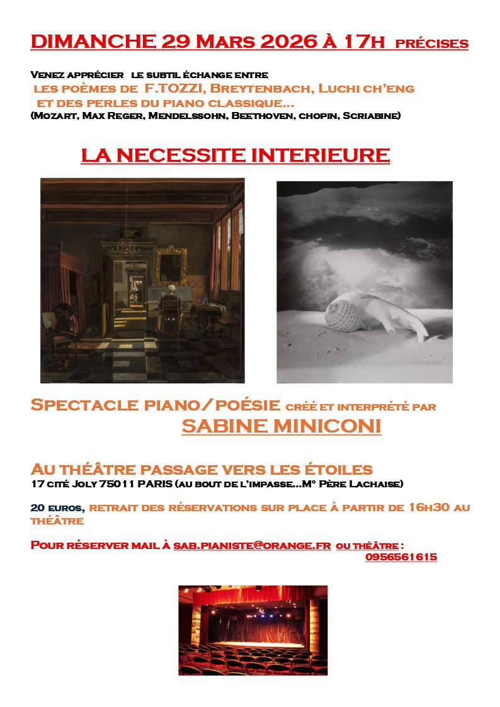

Les prochaines dates de piano et poésie

Mon prochain spectacles piano & poésie "La necessité intérieure"
Se déroulera au théâtre Passage vers les étoiles
17 cité Joly 75011 Paris
Au bout de l'impasse ... Métro Père-Lachaise
Le nombre de places étant limité, reservation appréciée par mail :
sab.pianiste@orange.fr